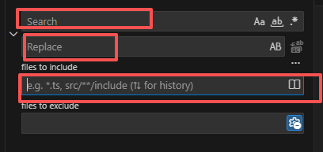

4. Run the Model
4.1. Run the Model without Auto-calibration

Enter the Runmodel folder, which is the output folder you specified in the configuration file in the previous step. activate the conda environment with conda activate pcraster and then run:
./run_model.sh
The model parameters are stored in the file standard_global.cfg located in the same folder. You may modify the parameters, output paths, and other settings as needed.
4.2. Run the Model with Auto-calibration
Upload the
Runmodelandobservationfolders to the cluster. Here I upload them to/public/home/acvfmokn51/.Enter the
Runmodelfolder in VS code, usingCtrl + Shift + hto batch replace the wsl path with the path on the cluster. E.g., Replace the/mnt/f/Example/Runmodelto/public/home/acvfmokn51/Runmodel. Or/mnt/f/Example/to/public/home/acvfmokn51/. To check your path, usingpwdto confirm.
Entering the
Run_pest folder, openrun_autocali.sh. Check whether thehostname,partition, andagents_num, and other settings are correct. See here for how to set those parameters.

Enter Runmodel/Run_pest folder, Run auto- calibration with
./run_autocali.sh, you will see something like this:

Optional settings
group.csv
PEST allows parameters to be organized into groups, which helps control how different sets of parameters are adjusted during calibration. A group file defines the parameter groups and their settings, such as group name, derivative calculation method, and regularization options. Each parameter in the parameter file is then assigned to one of these groups. Properly grouping parameters improves calibration stability, allows different update styles for different processes, and enables selective control over parameter sensitivity. By default works well.
clean.sh
Theclean.shscript is used to remove junk and temporary files. Enter theRun_Pestfolder and run:./clean.sh
This will clears all intermediate files and results generated, restoring the folder to the state before PEST was executed. This is very useful when:
A run fails and the folder needs to be cleaned before trying again
Starting a new auto-calibration
Removing outdated results to avoid confusion with new runs
However, be very careful⚠️!!!
Never execute this script outside the Run_Pest directory.
For example:
bash ./master/user/alacha/Runmodel/Run_Pest/clean.sh
Running like this way will cause the script to clean the entire parent folder, potentially deleting important files outside Run_Pest_.
So always use ./clean.sh if you want to have a clean folder.
tsprocpest.dat
Control the weight assigned to the observations. You can modify the weights in this file (last several lines).

PEST minimizes the weighted sum of squared differences between simulations and observations, calculated as
where \(\phi\) is the objective function, (\(m\)) is the total number of time steps in the calibration period, \(w_i\) is the observation weight, and (\(r_i\)) is the difference between simulations and observations.
Because the discrepancies can be weighted, some observations exert more influence on the optimization outcome than others. Ideally, weights should be chosen at a level commensurate with the measurement noise. Following Clausnitzer & Hopmans (1995), this Pre_processing tool calculate the weight for each observation as
where \((n_i)\) is the number of observations and \(\sigma_i^2\) is the variance of these observations.
The choice of weights can strongly affect the calibration results and often requires experimentation. In general, the default weights work pretty good.
pest++option.py
More advanced PEST settings
4.2.1. Outputs Structure
After the calibration is done. Here is an example what the Run_Pest folder will look like.

Some names under this folder are explained as below:
Agents
Each agent is like a “worker.” Every worker tests a different combination of parameters.Manager
The manager is the “controller” that assigns tasks to the agents. For example, deciding which agent tests which parameter combination. After the agents finish their runs, the results are collected by the manager, who then decides the next set of parameter combinations to test. This process continues until convergence. In this folder, PEST also stores all information related to the calibration process, such as how the error changes in each iteration (Pest.pst), the best parameter set (Pest.par), and other run-time details.pest_run_report.csv
This file logs all tested parameter sets. Every parameter combination that has been evaluated will be recorded here, along with the statistic(e.g., NSE). The output path of this file can be changed in standard_global.tpl. By default, it is saved in the parent folder of the Run_Pest directory. I usually won't put it under Run_pest, because the.clean.shmay delete this file by mistake.nohup.out The overview for each iteration. Can check if the jobs are successfully sending to the cluster, how many agents are current running and the weighted bias in each iteration.
4.2.2. Possible issues
1. Tsproc.exe or pestpp-glm, can not be executed

Inside the Run_pest folder, the required tsproc.exe and pest executables(pestpp-glm, pestpp-ies) are already pre-compiled and can usually be used directly.
The newest compiled version of pestpp-glm or pestpp-ies can be downloaded from: https://github.com/usgs/pestpp
If you encounter issues when running those executables, you may need to compile it manually and replace the executables with the new one. Reference: https://github.com/smwesten-usgs/tsproc and https://github.com/usgs/pestpp
2. Wrong way to send jobs
By deafult, the job schedulers on cluster is Slurm (Simple Linux Utility for Resource Management). So the way to send one job is
#!/bin/sh
#SBATCH --job-name=$name
#SBATCH --output=%x-%j.out
#SBATCH --time=50:10:00
#SBATCH --nodes=1
#SBATCH --ntasks-per-node=1
#SBATCH --partition=@PARTION
If your cluster's job schedulers are PBS (Portable Batch System). You should use something like this:
#PBS -N $name
#PBS -l nodes=1:ppn=1
#PBS -l walltime=200:00:00
#PBS -j oe
This can be changed in /src/mother_template/utilities/paralell.py